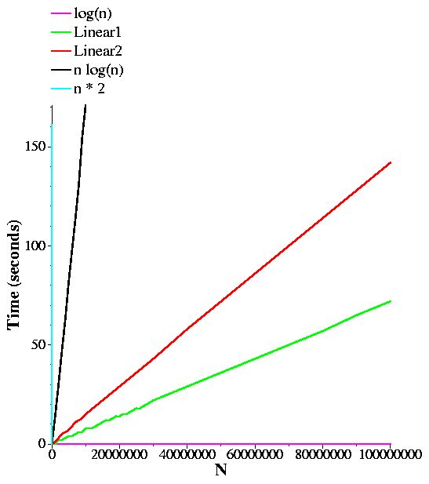
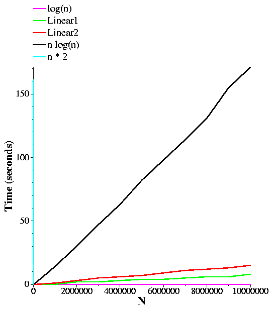
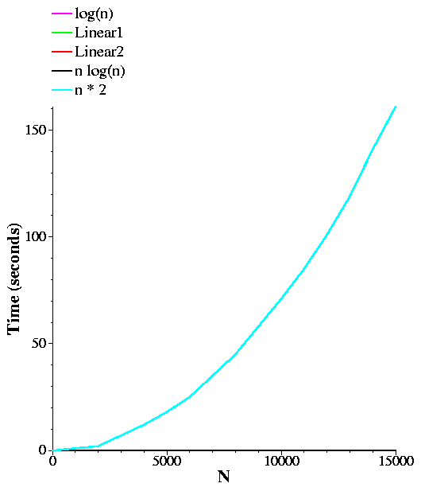

Last Modification:
Thu Mar 27 09:33:06 EDT 2014
Big-O
Big-O notation is one of the ways in which we talk about how complex
an algorithm or program is. It gives us a nice way of quantifying or
classifying how fast or slow a program is as a function of the size
of its input, and independently of the machine on which it runs.
Examples
Let's look at a program (in linear1.cpp):
#include <cstdio>
#include <cstdlib>
#include <iostream>
using namespace std;
main(int argc, char **argv)
{
int n;
double f;
double count;
int i, j;
long t0;
if (argc != 2) {
fprintf(stderr, "Usage: linear1 n\n");
exit(1);
}
n = atoi(argv[1]);
t0 = time(0);
count = 0;
f = 23.4;
for (i = 0; i < n; i++) {
count++;
f = f * f + 1;
j = (int) f / 1000;
f = f - j*1000;
// printf("%g\n", f);
}
printf("N: %d Count: %.0lf Time: %ld\n", n, count, time(0)-t0);
}
|
What this does is compute n random-ish numbers between one and
1000, and if we uncommented the printf() statement, then it
would print them -- try it out (uncomment the print statement).
Suppose we run this program with varying values of n.
What do we expect? Well, as n increases, so will
the count, and so will the running time of the program:
(This is on my machine at home -- I don't know how fast the machines
here will be.)
UNIX> g++ -o linear1 linear1.c
UNIX> linear1 1
N: 1 Count: 1 Time: 0
UNIX> linear1 10000
N: 10000 Count: 10000 Time: 0
UNIX> linear1 10000000
N: 10000000 Count: 10000000 Time: 8
UNIX> linear1 20000000
N: 20000000 Count: 20000000 Time: 14
UNIX> linear1 100000000
N: 100000000 Count: 100000000 Time: 72
UNIX>
Just what you'd think. The running time is roughly linear:
running time = 72n/100000000
Obviously, count equals n.
Now, look at four other programs below. I will just show their loops:
linear2.cpp:
...
for (i = 0; i < n; i++) {
count++;
f = f * f + 1;
j = (int) f / 1000;
f = f - j*1000;
}
for (i = 0; i < n; i++) {
count++;
f = f * f + 1;
j = (int) f / 1000;
f = f - j*1000;
}
...
|
log.cpp:
...
for (i = 1; i <= n; i *= 2) {
count++;
f = f * f + 1;
j = (int) f / 1000;
f = f - j*1000;
}
...
|
nlogn.cpp:
...
for (k = 0; k < n; k++) {
for (i = 1; i <= n; i *= 2) {
count++;
f = f * f + 1;
j = (int) f / 1000;
f = f - j*1000;
}
}
...
|
nsquared.cpp:
...
for (i = 0; i < n; i++) {
for (k = 0; k < n; k++) {
count++;
f = f * f + 1;
j = (int) f / 1000;
f = f - j*1000;
}
}
...
|
In the five programs total, the value of count will be the
following (note, I will expect you to be able to do things like
tell me what count is as a function of n on tests):
- linear1.cpp: count = n.
- linear2.cpp: count = 2n.
- log.cpp: count = log(n). (where the logarithm is base 2).
- nlogn.cpp: count = n*log(n). (where the logarithm is base 2).
- nsquared.cpp: count = n*n.
In each program, the running time is going to be directly proportional
to count. Why? Read chapter two for how to count instructions.
So, what do the running times look like if you increase n to large
values. I have the output of the various programs in the following
table of links:
Some things you should notice right off the bat: log(n) is very,
very small in comparison to n. This means that log.cpp
is blazingly fast for even huge values of n. On the other end
of the spectrum, n*n grows very quickly as n increases.
Below, I graph all of the programs' running times as a function of
n:

So, this shows what you'd think:
log(n) < n < 2n < n*log(n) < n*n
Perhaps its hard to gauge how much each is less than the other until you
see it. Below I plot the same graph, but zoomed up a bit so you can get
a better feel for n*log(n) and n*n.


Back to Big-O: Function comparison
Big-O notation tries to work on classifying functions. The functions that
we care about are the running times of programs. The first concept when
we deal with Big-O is comparing functions. Basically, we will say that
one function f(n)is greater than another g(n)
if there is a value x0 so that for all x >= x0:
f(x) >= g(x)
Put graphically, it means that after a certain point on the x axis,
as we go right, the curve for f(n) will always be higher than
g(n). Thus, given the graphs above, you can see that
n*n is greater than
n*log(n), which is greater than
2n, which is greater than
n, which is greater than
log(n).
So, here are some functions:
- a(n) = 1
- b(n) = 100
- c(n) = 6-n
- d(n) = n
- e(n) = 2n
- f(n) = 2n-5
- g(n) = n*n - 5000000000
- h(n) = log(n)
- i(n) = log(n) - 100
- j(n) = n*log(n)-100
So, we can ask ourselves questions: Is b(n) > a(n)? Yes. Why?
Because for any value of n, b(n) is 100, and a(n) is
1. Therefore for any value of n, b(n) is greater than
a(n).
That was easy. How about c(n) and b(n)? b(n) is
greater, because we can set x0 equal to 6:
For any value of x greater than 6, b(x)
is 100 and c(x) is negative.
Here's a total ordering of the above. Make sure you can prove all
of these to yourselves:
g(n) > j(n) > e(n) > f(n) > d(n) > h(n) > i(n) > b(n) > a(n) > c(n)
Some rules:
- If f(n) and g(n) are both polynomials of
degree k, then the lead coefficient defines which one is greater.
-
If f(n) is a polynomial of degree k and g(n) is a
polynomial of degree l < k, and both lead coefficients are
positive, then f(n) > g(n).
- If a*f(n) > b*g(n) for all positive constants a and
b, then c*f(n) + d*g(n) > e*f(n) + x*g(n) if and only
if c > e. For example, 20n*n - 100n > 19n*n + 60,000n.
Big-O
Given the above, we can now define
Big-O:
T(N) = O(f(N)) if there exists a constant c such that
c*f(N) >= T(N).
Given the definitions of a(n) through j(n)
above:
- a(n) = O(1).
- b(n) = O(1). This is because we can set c to 101.
- b(n) = O(n). Why? Set c equal to 1 and x0 equal to 101.
Then, b(x) will equal 100, and cx will be greater than 100.
- b(n) = O(n*n). Set c equal to 1 -- you can demonstrate easily that n*n > b(n).
- b(n) = O(a(n)). Set c equals to 101, and this is equivalent to the second case above.
- a(n) = O(b(n)). Set c equal to one.
- e(n) = O(n). Set c equal to three and x0 equal to 1.
- i(n) = O(log(n)). Set c equal to one and x0 equal to 1.
- j(n) = O(n*log(n)). Ditto.
- g(n) = O(n*n). Ditto.
Big Omega and Big Theta
Note that O(f(N)) is an upper bound on T(N). That means
that T(N) is definitely not bigger than f(n). Similarly,
if g(N) > f(N) and T(N) = O(f(N)), then
T(N) = O(g(n)) too. That's inconvenient. Why? Well, if a program's running time is linear
in the size of its input, then we'd like to say that the running time is O(n) and not
O(n2). Unfortunately, it is both.
Big Omega and Bit Theta help make things more precise:
- Big-Omega: T(N) = Ω(f(N)) if f(N) = O(T(N)). While Big-O says that
T(N) is no bigger than a factor times f(N), Big-Omega says that
T(N) is no smaller than a factor times f(N).
- Big-Theta: T(N) = Θ(f(N))
if T(N) = O(f(N)) and T(N) = Ω(f(N)). Big-Theta is the most precise of these
specifications. It says that T(N) and f(N) are equivalent to constant factors of
each other.
Let me give an example. Suppose I have a program that takes 3n + 5 operations on an input of
size n. We typically say that the program is O(n). That is clearly true
(choose c=4 and x0=10).
However, as mentioned above, the program is also
O(n2)
(choose c=1 and x0=10).
Is it O(1)? No -- there is no c such that c ≥ 3n + 5.
The program is Ω(n): choose c = 1 and x0=1 (in other words,
for any x ≥ 1, 3x+5 > x). However, it is not
Ω(n2), because there is no c such that c(3x+5) ≥ x2. It is, however,
Ω(1): choose c = 1 and x0=1 -- it's pretty easy to
see that 3x + 5 > 1.
Now, we can put this in terms of Big-Theta.
The program is
Θ(n), but not
Θ(n2) or
Θ(1).
It is unfortunate that we as computer scientists quantify algorithms using Big-O rather than Big-Theta,
but it is a fact of life. You need to know these definitions, and remember that most of the time, when
we say something is Big-O, in reality it is also Big-Theta, which is much more precise.
At this point, I think that giving the
Wikipedia page on Big-O
a scan is a good idea. This includes:
- The introduction.
- The first two equations in the Formal Definition.
- The Example.
- The Infinite asymptotics section.
- The Equals Sign section.
- The Orders of common functions section (ignore the "L-notation" line).
- The definitions of Big-O, Big-Omega and Big-Theta in the Family of Bachmann-Landau notations section.
- The text starting with "Aside from Big-O notation, ..." until the end of the section.
Two Big-O Proofs
You are not responsible for proofs like this, but it's not a bad idea to see them:
Is n*n + n + 1 = O(n*n)? See the following PDF file
for a proof.
Generalizing, is an*n + bn + d = O(n*n) for a,b,d > 1 and b > d?
See the following PDF file for a proof.
Using Big-O to Categorize
Although Big-O is laden with math, we use it to characterize the running times of
programs and algorithms. The following Big-O characterizations are particularly useful
(and they are all Big-Theta as well, even though we don't say so).
- O(1): This is called ``constant time.'' Any time a program takes a constant
number of instructions, regardless of the input, it is constant time. For example,
determining the size of a vector is O(1), regardless of the size of the vector,
because the STL stores the size as part of the vector.
Appending an element to a list, deque or vector is O(1). Pushing an element onto the
front of a list or deque is O(1). Accessing any element of a vector or deque
is also O(1).
Calling begin() or end() on any of the STL's data structures -- vector, deque,
list, set or map -- is O(1). Perhaps that is counterintuitive with a set or map,
but so be it.
- O(n): This is called ``linear.'' This is when the program takes time that is
directly proportional to size of its input. For example, creating a vector, list or
deque with n elements is O(n). Of course, creating the vector is faster,
but they are both linear, and their performance is directly proportional to n.
This is why we have the constant c in the definition of Big-O -- so that both
of these are O(n), even though the vector version is faster.
Traversing a set or map with an iterator is also O(n). This confuses students,
because the other operations on sets or map involve logarithms. So, memorize it. Hopefully,
when you learn about AVL trees, you'll get a better feeling for that.
And finally, deleting an element or inserting an element in the front of a vector is
also O(n). This is why you don't want to use a vector for this operation.
- O(n2): This is called ``quadratic time,'' and as the graphs above show,
it does not scale well. In particular, when n hits a value of 10,000, n2
gets pretty big (100,000,000). That doubly nested loop that I've gone over in class so many
time is O(n2):
for (i = 0; i < n; i++) {
for (j = 0; j < i; j++) {
...
}
}
Why? Recall that this loop is the summation of numbers from 0 to n-1, which is (n-1)n/2,
which equals n2/2 - n/2. You could prove that this is O(n) by
choosing c = 1, and x0 equal to 1.
- O(log(n)): This is called ``log time.'' Now, you may ask "what base?" The
answer is that the base doesn't matter. Why is that? Because:
logb(c) = loga(c) / loga(b).
Since loga(b) is a constant, for the purposes of Big-O, it doesn't matter.
That may seem confusing, so make it concrete. If a = log10(n),
then log2(n) = log2(10)*a. Since log2(10) is
a constant (a little greater than three), for the purposes of Big-O, logarithms in base 10 and
base 2 are equivalent.
Insertion, deletion, and finding elements in sets and maps are O(log(n)) operations.
- O(n*log(n)): This is called ``N log N.'' Creating maps and sets are
O(n*log(n)) operations. So is sorting a vector with n elements.